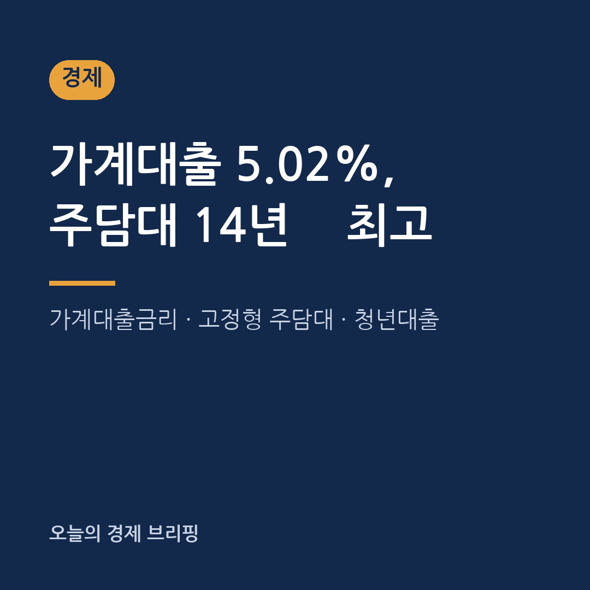
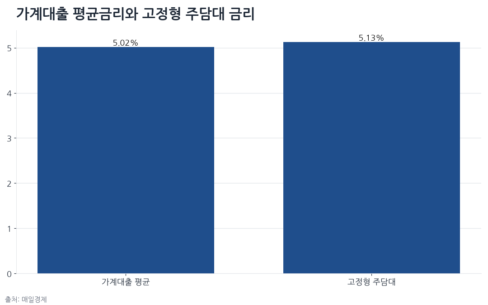

2026-11-25-1436-tistory 발행 키트 · 이 페이지는 검색에 노출되지 않습니다.
제목
카테고리
경제태그
본문 (그림·표 포함)
휴대폰 블로그 앱에서는 그림이 같이 붙지 않을 수 있어요. 그때는 [글자만 복사] 후 아래 이미지를 저장해 [그래프1]·[표1] 자리에 첨부하세요.
은행권 가계대출 평균 금리가 연 5.02%로 6개월 연속 상승하며 약 3년 만에 5%대에 올라섰습니다. 주택담보대출 금리는 14년 7개월 만에 가장 높은 수준이며, 같은 시기 서울시 청년 임차보증금 대출은 신청이 크게 늘었습니다.

▶ 배경: 6개월 연속 오른 대출금리
가계대출 평균 금리는 6개월째 오름세입니다. 연 5%를 넘은 것은 약 3년 만의 일입니다.
주택담보대출(주담대, 집을 담보로 빌리는 대출) 금리는 14년 7개월 만에 가장 높은 구간에 들어섰습니다.
▶ 핵심 내용: 고정형 주담대가 5.13%로 최고
금리 유형별로 보면 고정형 주담대가 연 5.13%로 가장 높게 나타났습니다. 고정형은 일정 기간 금리가 변하지 않는 방식이어서, 시장금리가 오르는 국면에서는 대출 시점의 금리가 높게 책정되는 경향이 있습니다.

▶ 영향: 변동금리 차주와 신규 대출자
이미 대출을 받은 변동금리 이용자는 다음 금리 재산정 시점에 이자 부담이 늘 수 있습니다. 신규 대출자는 처음부터 높아진 금리를 적용받습니다.
원리금 상환액은 대출 규모가 클수록 금리 변화에 민감하게 반응합니다. 금리가 1%포인트 오르면 1년 이자는 원금의 1%만큼 늘어납니다.
▶ 함께 볼 이슈: 서울시 청년 임차보증금 대출 급증
금리 부담이 커지면서 이자를 지원하는 정책 상품으로 수요가 몰리는 모습입니다. 서울시 청년 임차보증금 신규 대출은 올해 1월부터 9월까지 2,661건으로, 지난해 연간 실적 1,302건의 두 배를 넘겼습니다.
이 상품은 하나은행 한 곳에서만 취급합니다. 하나은행이 가계대출 총량 관리(금융당국이 은행별 연간 대출 증가 한도를 관리하는 제도) 대상이라, 취급이 줄면 다른 은행에서는 같은 이자 지원을 받지 못한다는 점이 문제로 거론됩니다.
청년 임차보증금 대출 확인 항목
| 항목 | 내용 |
|---|---|
| 올해 1~9월 신규 대출 | 2,661건 |
| 지난해 연간 실적 | 1,302건 |
| 취급 은행 | 하나은행 한 곳 |
| 변수 | 가계대출 총량 관리 대상 |
출처: 매일경제
▶ 확인할 점
첫째, 보유 대출의 금리 방식(고정·변동)과 다음 재산정일을 확인해야 합니다. 둘째, 청년 임차보증금 대출을 계획 중이라면 신청 자격과 취급 은행, 접수 가능 여부를 먼저 점검해야 합니다.
셋째, 총량 관리 때문에 은행의 대출 취급 여건이 수시로 바뀔 수 있으므로 신청 직전에 창구나 앱에서 현재 상황을 재확인하시기 바랍니다.
▶ 정리
1. 가계대출 평균 금리는 연 5.02%로 6개월 연속 올랐고, 약 3년 만에 5%를 넘었습니다.
2. 고정형 주담대는 5.13%로 가장 높으며, 주담대 금리는 14년 7개월 만의 최고 수준입니다.
3. 서울시 청년 임차보증금 대출은 올해 9월까지 지난해 연간 실적의 두 배를 넘었고, 취급 은행이 한 곳이라 총량 관리의 영향을 받을 수 있습니다.
이 글은 공개된 뉴스를 바탕으로 정리한 정보 제공용 글이며, 투자나 대출 상품 선택을 권유하지 않습니다.
출처 (본문 맨 아래에 붙여넣기 권장)
- 매일경제, 가계대출 금리 5% 돌파…주담대 금리 14년7개월 만에 최고, https://www.mk.co.kr/news/economy/12218043 - 매일경제, [단독] 연봉 5천인데 이자 지원해준다구요? 전월세 신청자 폭발, https://www.mk.co.kr/news/economy/12218000